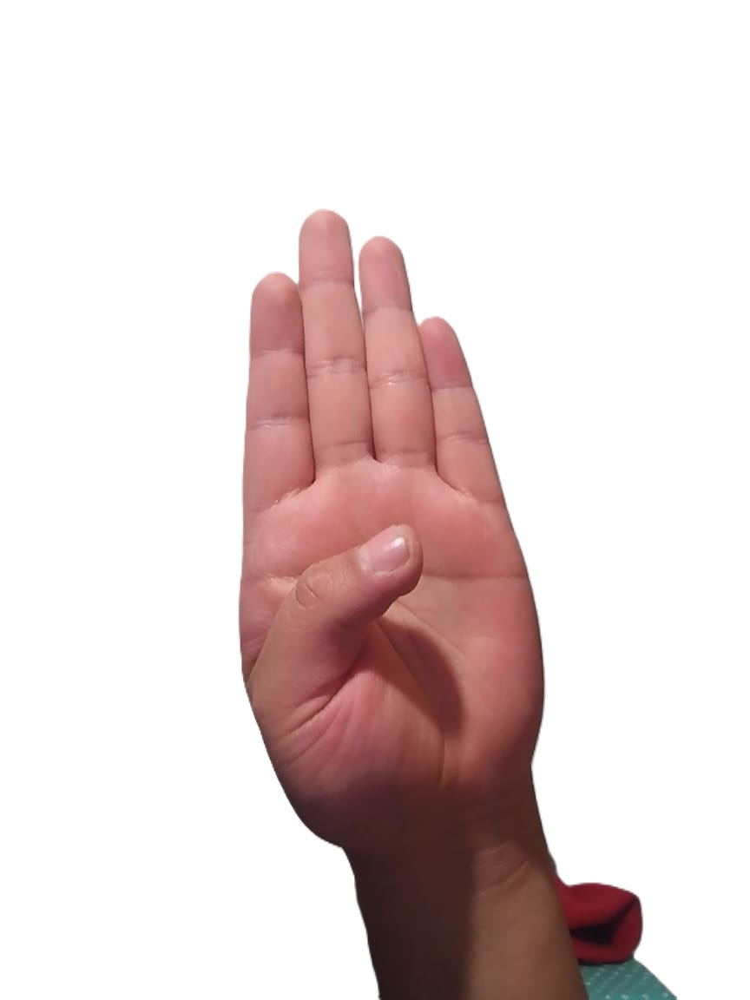

Letra A

Con la mano cerrada, se muestran las uñas y se estira el dedo pulgar hacia un lado. La palma mira al frente.
Letra B
Los dedos índice, medio, anular y meñique se estiran bien unidos y el pulgar se dobla hacia la palma, la cual mira al frente.
Letra C

Los dedos índice, medio, anular y meñique se mantienen bien unidos y en posición cóncava; el pulgar también se pone en esa posición. La palma mira a un lado.
Letra D

Los dedos medio, anular, meñique y pulgar se unen por las puntas y el dedo índice se estira. La palma mira al frente.
Letra E

Se doblan los dedos completamente, y se muestran las uñas. La palma mira al frente.
Letra F

Con la mano abierta y los dedos bien unidos, se dobla el índice hasta que su parte lateral toque la yema del pulgar. La palma mira a un lado.
Letra G

Se cierra la mano y los dedos índice y pulgar se estiran. La palma mira hacia usted.
Letra H

Con la mano cerrada y los dedos índice y medio bien estirados y unidos, se extiende el dedo pulgar señalando hacia arriba. La palma mira hacia usted.
Letra I

Con la mano cerrada, el dedo meñique se estira señalando hacia arriba. La palma se pone de lado.
Letra J

Con la mano cerrada, el dedo meñique bien estirado señalando hacia arriba y la palma a un lado dibuja una j en el aire.
Letra K

Se cierra la mano con los dedos índice, medio y pulgar estirados. La yema del pulgar se pone entre el índice y el medio. Se mueve la muñeca hacia arriba.
Letra L

Con la mano cerrada y los dedos índice y pulgar estirados, se forma una l. La palma mira al frente.
Letra M

Con la mano cerrada, se ponen los dedos índice, medio y anular sobre el pulgar.
Letra N

Con la mano cerrada, se ponen los dedos índice y medio sobre el pulgar.
Letra Ñ

Con la mano cerrada, se ponen los dedos índice y medio sobre el pulgar. Se mueve la muñeca a los lados.
Letra O

Con la mano se forma una letra o. Todos los dedos se tocan por las puntas.
Letra P

Con la mano cerrada y los dedos índice, medio y pulgar estirados, se pone la yema del pulgar entre el índice y el medio.
Letra Q

Con la mano cerrada, se ponen los dedos índice y pulgar en posición de garra. La palma mira hacia abajo, y se mueve la muñeca hacia los lados.
Letra R

Con la mano cerrada, se estiran y entrelazan los dedos índice y medio. La palma mira al frente.
Letra S

Con la mano cerrada, se pone el pulgar sobre los otros dedos. La palma mira al frente.
Letra T

Con la mano cerrada, el pulgar se pone entre el índice y el medio. La palma mira al frente.
Letra U

Con la mano cerrada, se estiran los dedos índice y medio unidos. La palma mira al frente.
Letra V

Con la mano cerrada, se estiran los dedos índice y medio separados. La palma mira al frente.
Letra W

Con la mano cerrada, se estiran los dedos índice, medio y anular separados. La palma mira al frente.
Letra X

Con la mano cerrada, el índice y el pulgar en posición de garra y la palma dirigida a un lado, se realiza un movimiento al frente y de regreso
Letra Y

Con la mano cerrada, se estira el meñique y el pulgar. La palma mira hacia usted.
Letra Z

Con la mano cerrada, el dedo índice estirado y la palma al frente, se dibuja una letra z en el aire